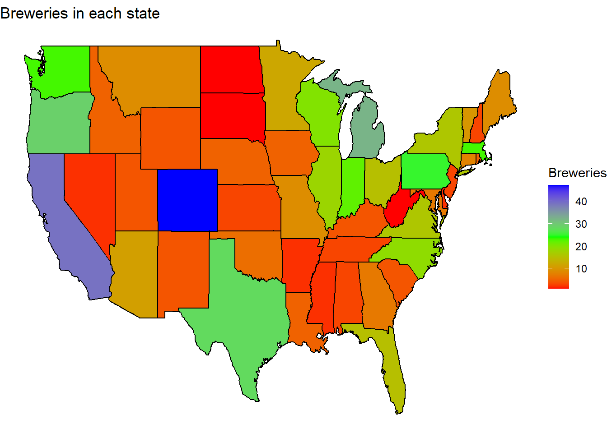
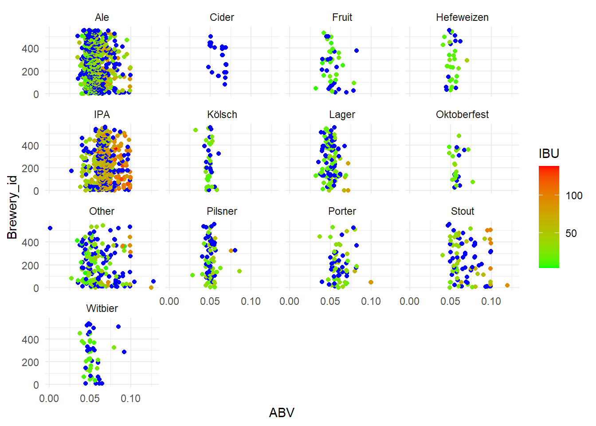
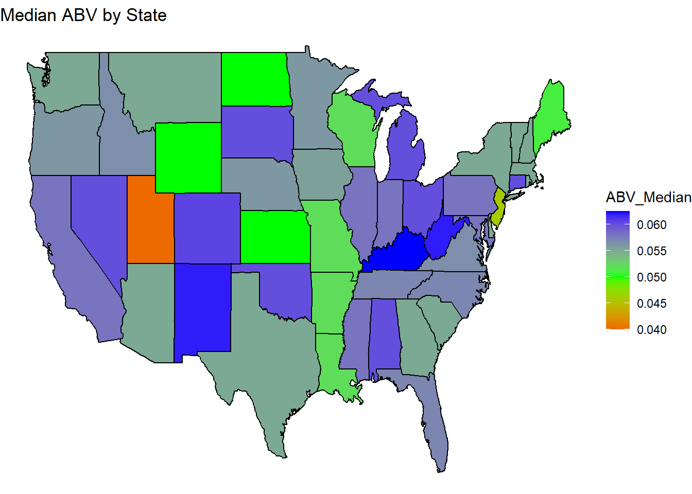
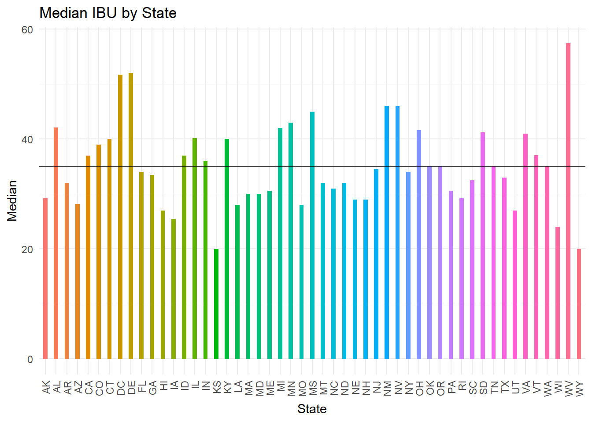

Beer and Breweries
Tadd Backus & Austin Webb
2022-07-12
Introduction and Overview
In this report, we explore the datasets you provided to us; the datasets that have information for various beers, and the breweries that produce them, in the USA. The steps and procedures taken for this analysis are detailed below. We start by looking at basic summary statistics, visual graphics, and at the statistical differences between ABV (alcohol by volume) and IBU (International Bitterness Units). We also looked at the differences between IPAs and other types of Ales.
The initial data provided were in two separate datasets, one for beers and one for breweries, which were later combined into a single dataset.
GitHub
Our GitHub repository {https://github.com/tadbackus/beerAndBreweries} has this code we used, as well as previously used code. There are also older versions of the PowerPoint that we created.
README.md: This page shows an introduction to the analysis we ran. It also includes a few details about the datasets provided.Beers.csvandBreweries.csvwere provided and are the original datasets from which our merged dataset is produced.
Here we import all the necessary libraries and packages
We will read in the beer and brewery data provided
# Read in the data
beer <- read.csv(file.choose(), header = TRUE)
brewery <- read.csv(file.choose(), header = TRUE)The beer dataset has 2,410 observations and seven columns. The brewery dataset has 558 observations four columns.
Question 1
Number of Breweries in each state
We will first look at a table that shows the number of breweries in each state. We will then look at a map of the USA that is color coded to visually show the amount of breweries in each state.
# Make the state column a factor
brewery$State = factor(brewery$State)
# See how many breweries are in each state
summary(brewery$State)## AK AL AR AZ CA CO CT DC DE FL GA HI IA ID IL IN KS KY LA MA
## 7 3 2 11 39 47 8 1 2 15 7 4 5 5 18 22 3 4 5 23
## MD ME MI MN MO MS MT NC ND NE NH NJ NM NV NY OH OK OR PA RI
## 7 9 32 12 9 2 9 19 1 5 3 3 4 2 16 15 6 29 25 5
## SC SD TN TX UT VA VT WA WI WV WY
## 4 1 3 28 4 16 10 23 20 1 4# Create the setup for a US heat map for breweries in each state
brewMap = brewery
# Create a dataframe with state information
lookup = data.frame(abb = state.abb,
State = state.name)
# Rename State column and trim white space from abb column
brewMap <- rename(brewMap,
abb = State)
brewMap$abb = trimws(brewMap$abb)
# Merging the data with the state information
brewStateMap = merge(brewMap,
lookup,
by = 'abb',
all = TRUE)
# Summing the number of breweries in each state
brewMapData = count(brewStateMap,
State)
colnames(brewMapData)[2] = 'Breweries'
brewMapData$region <- tolower(brewMapData$State)
brewMapData2 = brewMapData[-1]
states <- map_data('state')
# Creating the data frame to map
map.df <- merge(states,
brewMapData2,
by = 'region',
all.x = T)
map.df <- map.df[order(map.df$order),]# Plot the USA heatmap for breweries in each state
ggplot(map.df,
aes(x = long,
y = lat,
group = group)) +
geom_polygon(aes(fill = Breweries))+
geom_path() +
scale_fill_gradient2(low = 'red',
mid = 'green',
high = 'blue',
midpoint = 24,
na.value = 'grey90') +
ggtitle('Breweries in each state') +
theme_void()
We can see from the table, and the map as secondary evidence, that the state with the most breweries is Colorado with 47 breweries.
Question 2
Combining the beer and brewery data
Here is where we merge the two datsets into one. We do this by merging on the ‘Brewery_id’ from the beer dataset and ‘Brew_ID’ from the brewery dataset.
# Merge the data
beer_brewery_merged <- merge(beer,
brewery,
by.x = 'Brewery_id',
by.y = 'Brew_ID')
# See the first six observations
head(beer_brewery_merged, 6)## Brewery_id Name.x Beer_ID ABV IBU
## 1 1 Get Together 2692 0.045 50
## 2 1 Maggie's Leap 2691 0.049 26
## 3 1 Wall's End 2690 0.048 19
## 4 1 Pumpion 2689 0.060 38
## 5 1 Stronghold 2688 0.060 25
## 6 1 Parapet ESB 2687 0.056 47
## Style Ounces Name.y City
## 1 American IPA 16 NorthGate Brewing Minneapolis
## 2 Milk / Sweet Stout 16 NorthGate Brewing Minneapolis
## 3 English Brown Ale 16 NorthGate Brewing Minneapolis
## 4 Pumpkin Ale 16 NorthGate Brewing Minneapolis
## 5 American Porter 16 NorthGate Brewing Minneapolis
## 6 Extra Special / Strong Bitter (ESB) 16 NorthGate Brewing Minneapolis
## State
## 1 MN
## 2 MN
## 3 MN
## 4 MN
## 5 MN
## 6 MN# See the last six observations
tail(beer_brewery_merged, 6)## Brewery_id Name.x Beer_ID ABV IBU
## 2405 556 Pilsner Ukiah 98 0.055 NA
## 2406 557 Heinnieweisse Weissebier 52 0.049 NA
## 2407 557 Snapperhead IPA 51 0.068 NA
## 2408 557 Moo Thunder Stout 50 0.049 NA
## 2409 557 Porkslap Pale Ale 49 0.043 NA
## 2410 558 Urban Wilderness Pale Ale 30 0.049 NA
## Style Ounces Name.y City
## 2405 German Pilsener 12 Ukiah Brewing Company Ukiah
## 2406 Hefeweizen 12 Butternuts Beer and Ale Garrattsville
## 2407 American IPA 12 Butternuts Beer and Ale Garrattsville
## 2408 Milk / Sweet Stout 12 Butternuts Beer and Ale Garrattsville
## 2409 American Pale Ale (APA) 12 Butternuts Beer and Ale Garrattsville
## 2410 English Pale Ale 12 Sleeping Lady Brewing Company Anchorage
## State
## 2405 CA
## 2406 NY
## 2407 NY
## 2408 NY
## 2409 NY
## 2410 AKWe then look at the first six and final six observations from the new merged dataset.
Question 3
Missing values
We use a simple formula here to count the number of missing values in each column.
# Count the number of missing values in each column
sapply(beer_brewery_merged, function(x) sum(is.na(x)))## Brewery_id Name.x Beer_ID ABV IBU Style Ounces
## 0 0 0 62 1005 0 0
## Name.y City State
## 0 0 0From this table, we see that there are 62 missing values for ABV and 1005 missing values for IBU.
Plotting missing values
We now look at a visually appealing way to see the missing data
gg_miss_var(beer_brewery_merged)## Warning: It is deprecated to specify `guide = FALSE` to remove a guide. Please
## use `guide = "none"` instead.
Categorizing beer type
We want to group the different beers by type of beer. We do this by creating a list of common beer types and assigning by the name of the beer.
# Create a list of beer types
beerTypes = c('Ale',
'Lager',
'Stout',
'Porter',
'Pilsner',
'Pilsener',
'IPA',
'Cider',
'Oktoberfest',
'Witbier',
'Kölsch',
'Fruit',
'Hefeweizen',
'Other')
# Group the beers by their type
beer_brewery_merged$beerCat <- ifelse(grepl(beerTypes[1], beer_brewery_merged$Style), beerTypes[1],
ifelse(grepl(beerTypes[2], beer_brewery_merged$Style), beerTypes[2],
ifelse(grepl(beerTypes[3], beer_brewery_merged$Style), beerTypes[3],
ifelse(grepl(beerTypes[4], beer_brewery_merged$Style), beerTypes[4],
ifelse(grepl(beerTypes[5], beer_brewery_merged$Style), beerTypes[5],
ifelse(grepl(beerTypes[6], beer_brewery_merged$Style), beerTypes[5],
ifelse(grepl(beerTypes[7], beer_brewery_merged$Style), beerTypes[7],
ifelse(grepl(beerTypes[8], beer_brewery_merged$Style), beerTypes[8],
ifelse(grepl(beerTypes[9], beer_brewery_merged$Style), beerTypes[9],
ifelse(grepl(beerTypes[10], beer_brewery_merged$Style), beerTypes[10],
ifelse(grepl(beerTypes[11], beer_brewery_merged$Style), beerTypes[11],
ifelse(grepl(beerTypes[12], beer_brewery_merged$Style), beerTypes[12],
ifelse(grepl(beerTypes[13], beer_brewery_merged$Style), beerTypes[13],
beerTypes[14])))))))))))))
# Make the beerCat column a factor
beer_brewery_merged$beerCat = factor(beer_brewery_merged$beerCat)
# See how many beers are in each beer category
summary(beer_brewery_merged$beerCat)## Ale Cider Fruit Hefeweizen IPA Kölsch
## 976 37 49 40 558 42
## Lager Oktoberfest Other Pilsner Porter Stout
## 158 30 204 91 74 100
## Witbier
## 51From this grouping, we see that there are 976 ales, 558 IPAs, and a variety of other beer types.
We use this code to see how the ABV and IBU compare for all the different types of beers
# Create scatterplots for each beer type with ABV vs IBU vs Brewery
ggplot(beer_brewery_merged,
aes(x = ABV,
y = Brewery_id,
color = IBU)) +
geom_point(position = 'jitter') +
facet_wrap(~beerCat) +
scale_color_gradient(low = 'green',
high = 'red',
na.value = 'blue')## Warning: Removed 62 rows containing missing values (geom_point).
From these plots, we can see that all the ‘ciders’ have missing values. We will take care of these in the next chunk of code.
Removing Cider and verifying
We create a new df with the ciders filtered out. we then recreate the above plots that show how the ABV and IBU compare for all the different types of beers
# Remove cider as a beer type category
beer_brewery_noCider <- filter(beer_brewery_merged, !beerCat=='Cider')
# Make beer category a factor in the new df
beer_brewery_noCider$beerCat = factor(beer_brewery_noCider$beerCat)
# Check how many beers are in each category
summary(beer_brewery_noCider$beerCat)## Ale Fruit Hefeweizen IPA Kölsch Lager
## 976 49 40 558 42 158
## Oktoberfest Other Pilsner Porter Stout Witbier
## 30 204 91 74 100 51# Make a scatterplot for each beer type with ABV vs IBU vs Brewery
ggplot(beer_brewery_noCider,
aes(x = ABV,
y = Brewery_id,
color = IBU)) +
geom_point(position = 'jitter') +
facet_wrap(~beerCat) +
scale_color_gradient(low = 'green',
high = 'red',
na.value = 'blue')## Warning: Removed 62 rows containing missing values (geom_point).Dropping ABV NAs
# drop the observations that have missing ABV
beer_brewery_noCider <- filter(beer_brewery_noCider, !is.na(ABV))kNN Imputation
This is where we start the kNN process. We impute the missing values with a kNN model.
# Create knn function with k = 5 and use the ABV, IBU, and beerCat columns
preProcValues <- preProcess(beer_brewery_noCider %>%
dplyr::select(ABV,
IBU,
beerCat),
method = c('knnImpute'),
k = 5,
knnSummary = mean)
# Impute the missing IBU values with knn prediction
impute_IBU_info <- predict(preProcValues,
beer_brewery_noCider,
na.action = na.pass)
# Create a new df with to translate data back to the measurement values
procNames <- data.frame(col = names(preProcValues$mean),
mean = preProcValues$mean,
sd = preProcValues$std)
# Undoing the normalization of the data
for(i in procNames$col){
impute_IBU_info[i] <- impute_IBU_info[i]*preProcValues$std[i]+preProcValues$mean[i]
}
# Make a scatterplot for each beer type with ABV vs IBU vs Brewery
ggplot(impute_IBU_info,
aes(x = ABV,
y = Brewery_id,
color = IBU)) +
geom_point(position = 'jitter') +
facet_wrap(~beerCat) +
scale_color_gradient(low = 'green',
high = 'red',
na.value = 'blue')From the plots above, we see that the missing values have been accurately imputed with five of their nearest neighbors.
Question 4
Finding median ABV and IBU per State
We will create new dataframes that are grouped by state and have the
median ABV/IBU.
We will use these new dataframes to create barplots to visually see the
differences of medians for each state.
This will be followed by more USA heatmaps.
These ones showing the median ABV/IBU.
# Create df of state and median ABV
ABV_Medians_mean <- impute_IBU_info %>%
group_by(State) %>%
summarise(Median = median(ABV))
# Create df of state and median IBU
IBU_Medians_mean <- impute_IBU_info %>%
group_by(State) %>%
summarise(Median = median(IBU))
# Merge the two medians df together
ABV_IBU_merged <- merge(ABV_Medians_mean,
IBU_Medians_mean,
by = 'State')
# Rename the columns
ABV_IBU_merged <- rename(ABV_IBU_merged,
'ABV_Median' = 'Median.x')
ABV_IBU_merged <- rename(ABV_IBU_merged,
'IBU_Median' = 'Median.y')
# USA heatmap setup
ABV_IBU_map = ABV_IBU_merged
ABV_IBU_map <- rename(ABV_IBU_map,
abb = State)
ABV_IBU_map$abb = trimws(ABV_IBU_map$abb)
ABV_IBU_stateMap = merge(ABV_IBU_map,
lookup,
by = 'abb',
all = TRUE)
ABV_IBU_stateMap$region <-tolower(ABV_IBU_stateMap$State)
ABV_IBU_stateMap2 = ABV_IBU_stateMap[-1]
states <- map_data('state')
map2.df <- merge(states,
ABV_IBU_stateMap2,
by = 'region',
all.x = T)
map2.df <- map2.df[order(map2.df$order),]
# Create bar plot for median ABV
ggplot(ABV_Medians_mean,
aes(x = State,
y = Median,
fill = State)) +
geom_bar(width = 0.4,
position = position_dodge(width = 0.05),
stat = 'identity',
show.legend = FALSE) +
ggtitle('Median ABV by State') +
geom_hline(yintercept = mean(ABV_Medians_mean$Median)) +
xlab('State') +
ylab('Median') +
scale_x_discrete(guide = guide_axis(angle = 90))
# Create USA Heaptmap for median ABV
ggplot(map2.df,
aes(x = long,
y = lat,
group = group)) +
geom_polygon(aes(fill = ABV_Median)) +
geom_path() +
scale_fill_gradient2(low = 'red',
mid = 'green',
high = 'blue',
midpoint = .05) +
theme_void() +
ggtitle('Median ABV by State')
# Create bar plot for median IBU
ggplot(IBU_Medians_mean,
aes(x = State,
y = Median,
fill = State)) +
geom_bar(width = 0.4,
position = position_dodge(width = 0.05),
stat = 'identity',
show.legend = FALSE) +
ggtitle('Median IBU by State') +
geom_hline(yintercept = mean(IBU_Medians_mean$Median)) +
xlab('State') +
ylab('Median') +
scale_x_discrete(guide = guide_axis(angle = 90))
# Create USA heatmap for meidan IBU
ggplot(map2.df,
aes(x = long,
y = lat,
group = group)) +
geom_polygon(aes(fill = IBU_Median)) +
geom_path() +
scale_fill_gradient2(low = 'red',
mid = 'green',
high = 'blue',
midpoint = 40) +
theme_void() +
ggtitle('Median IBU by State')
Question 5
Max ABV
We changed the names of two columns that were automatically named
from when we merged the datasets.
We extract the observation with the highest ABV and put it in a
dataframe.
# Rename columns
impute_IBU_info <- rename(impute_IBU_info, 'Beer Name' = 'Name.x')
impute_IBU_info <- rename(impute_IBU_info, 'Brewery Name' = 'Name.y')
# Extract the max ABV observation
max_ABV <- impute_IBU_info %>% slice(which.max(impute_IBU_info$ABV))
max_ABV## Brewery_id Beer Name Beer_ID ABV
## 1 52 Lee Hill Series Vol. 5 - Belgian Style Quadrupel Ale 2565 0.128
## IBU Style Ounces Brewery Name City State beerCat
## 1 81 Quadrupel (Quad) 19.2 Upslope Brewing Company Boulder CO OtherThe max ABV is found in Lee Hill Series Vol. 5 - Belgian Style Quadrupel Ale, which has an ABV of .128
Max IBU
We extract the observation with the highest IBU and put it in a dataframe.
# Extract the max IBU observation
max_IBU <- impute_IBU_info %>% slice(which.max(impute_IBU_info$IBU))
max_IBU## Brewery_id Beer Name Beer_ID ABV IBU
## 1 375 Bitter Bitch Imperial IPA 980 0.082 138
## Style Ounces Brewery Name City State
## 1 American Double / Imperial IPA 12 Astoria Brewing Company Astoria OR
## beerCat
## 1 IPAThe max IBU is found in Bitter Bitch Imperial IPA, with an IBU of 138.
Question 6
Stats of ABV
We made a table that shows basic summary statistics for the ABV. We also made a couple plots to visually show these summary statistics.
# See the summary statistics for ABV
summary(impute_IBU_info$ABV)## Min. 1st Qu. Median Mean 3rd Qu. Max.
## 0.00100 0.05000 0.05600 0.05976 0.06700 0.12800# Plot the ABV distribution on a histogram
ggplot(impute_IBU_info,
aes(x = ABV)) +
geom_histogram(fill = 'red',
color = 'blue') +
ggtitle('ABV Distribution') +
geom_vline(xintercept = mean(impute_IBU_info$ABV),
size = 1.5)## `stat_bin()` using `bins = 30`. Pick better value with `binwidth`.# Create a boxplot for ABV distribution
ggplot(impute_IBU_info,
aes(x = ABV)) +
geom_boxplot(fill = 'red',
color = 'blue') +
ggtitle('ABV Distribution')We can see basic summary statistics in the table below: Min. 1st Qu. Median Mean 3rd Qu. Max. 0.00100 0.05000 0.05600 0.05976 0.06700 0.12800
Question 7
ABV vs IBU scatter
We created a scatterplot to help see the correlation between ABV and IBU. We also looked at the exact correlation coefficient.
# Create a scatterplot for ABV vs IBU
ggplot(impute_IBU_info,
aes(x = ABV,
y = IBU)) +
geom_point(shape = 18,
color = 'red') +
geom_smooth(method = lm,
color = 'blue',
fill = 'blue') +
ggtitle('ABV vs. IBU')## `geom_smooth()` using formula 'y ~ x'# Finding the correlation coefficient between ABV and IBU
cor(impute_IBU_info$ABV, impute_IBU_info$IBU)## [1] 0.7222858The correlation coefficient is 0.7222. This suggests that the average unit of IBU will increase by 0.7222 units for every one unit of increase in ABV.
Question 8
IPA vs other Ales
We made a new dataframe that only contains IPA and Ale beer types. We built a scatterplot to help visualize the differences between the two types of beer and the ABV and IBU.
# Create new df with just IPA and ALe
aleIPAdf <- filter(impute_IBU_info, beerCat == 'IPA' | beerCat == 'Ale')
# See summary stats of all columns in new df
summary(aleIPAdf)## Brewery_id Beer Name Beer_ID ABV
## Min. : 1.0 Length:1492 Min. : 1.0 Min. :0.02700
## 1st Qu.: 93.0 Class :character 1st Qu.: 792.8 1st Qu.:0.05100
## Median :205.0 Mode :character Median :1474.5 Median :0.06000
## Mean :230.1 Mean :1431.8 Mean :0.06131
## 3rd Qu.:361.2 3rd Qu.:2076.2 3rd Qu.:0.07000
## Max. :558.0 Max. :2692.0 Max. :0.09900
##
## IBU Style Ounces Brewery Name
## Min. : 4.00 Length:1492 Min. :12.00 Length:1492
## 1st Qu.: 25.80 Class :character 1st Qu.:12.00 Class :character
## Median : 42.00 Mode :character Median :12.00 Mode :character
## Mean : 46.97 Mean :13.59
## 3rd Qu.: 65.00 3rd Qu.:16.00
## Max. :138.00 Max. :32.00
##
## City State beerCat
## Length:1492 CO :170 Ale :944
## Class :character CA :123 IPA :548
## Mode :character IN : 87 Fruit : 0
## MI : 85 Hefeweizen: 0
## OR : 84 Kölsch : 0
## TX : 73 Lager : 0
## (Other):870 (Other) : 0# Scatterplot of ABV vs IBU with beer category
ggplot(aleIPAdf,
aes(x = ABV,
y = IBU,
color = beerCat)) +
geom_point()+
ggtitle('ABV vs IBU for Ales and IPAs')Question 9
kNN Classifier
# Number of iterations
iterations = 500
# Number of k values to iterate over
numks = 30
# Percentage of train set when splitting out the test data
splitPerc = .70
#kNN for many iterations and 30 Ks
# Placeholders for results
masterAcc = matrix(nrow=iterations, ncol=numks)
masterSen = matrix(nrow=iterations, ncol=numks)
masterSpec = matrix(nrow=iterations, ncol=numks)
# Iterates over 500 different test/train splits for a kNN
for(j in 1:iterations)
{
# Splits the data into training and testing splits
trainIndices = sample(1:dim(aleIPAdf)[1],round(splitPerc * dim(aleIPAdf)[1]))
train = aleIPAdf[trainIndices,]
test = aleIPAdf[-trainIndices,]
# Goes through k = 1 to k=30 for each iteration
for(i in 1:numks)
{
class = knn(train[,c(4,5)],test[,c(4,5)],train$beerCat,prob=TRUE,k=i)
CM = confusionMatrix(table(class, test$beerCat))
# Holds the results of every iterations and k value
masterAcc[j,i] = CM$overall[1]
masterSen[j,i] = CM$byClass[1]
masterSpec[j,i] = CM$byClass[2]
}
}
# Find the mean for each k value for all 500 iterations
meanAcc = colMeans(masterAcc)
meanSen = colMeans(masterSen)
meanSpec = colMeans(masterSpec)
kResults = data.frame(k=seq(1,numks,1),acc=meanAcc,sen=meanSen,spec=meanSpec)
# Sets consistent seed
sVal=50
set.seed(sVal)
# Setting up kNN parameters
k2Results = data.frame(accuracy=numeric(30),sensit=numeric(30),specif=numeric(30),k=numeric(30))
trainInd2 = sample(1:dim(aleIPAdf)[1],round(splitPerc * dim(aleIPAdf)[1]))
train2 = aleIPAdf[trainInd2,]
test2 = aleIPAdf[-trainInd2,]
# Iterating from k=1 to k=30 for a single seed value
for(i in 1:numks)
{
class2 = knn(train2[,c(4,5)],test2[,c(4,5)],train2$beerCat,prob=TRUE,k=i)
CM2 = confusionMatrix(table(class2,test2$beerCat))
# Storing the results
k2Results$accuracy[i] = CM2$overall[1]
k2Results$sensit[i] = CM2$byClass[1]
k2Results$specif[i] = CM2$byClass[2]
k2Results$k[i] = i
}
# Merging the results from the 500 iterations test and the single seed test
kMerge <- merge(kResults,k2Results,by='k')
#single Knn
# Set the seed value
set.seed(sVal)
# Set the k value
kVal = 10
# Setting up kNN parameters
trainInd3 = sample(1:dim(aleIPAdf)[1],round(splitPerc * dim(aleIPAdf)[1]))
train3 = aleIPAdf[trainInd3,]
test3 = aleIPAdf[-trainInd3,]
class3 = knn(train3[,c(4,5)],test3[,c(4,5)],train3$beerCat,prob=TRUE,k=kVal)
CM3 = confusionMatrix(table(class3,test3$beerCat))
# Recording the results
yAcc = CM3$overall[1]
ySen = CM3$byClass[1]
ySpec = CM3$byClass[2]
# Plotting the results from all three types of kNN
ggplot(kMerge, aes(x=k))+
geom_line(aes(y=acc),color='darkred')+
geom_line(aes(y=accuracy),color='darkred',linetype='twodash')+
geom_line(aes(y=sen),color='steelblue')+
geom_line(aes(y=sensit),color='steelblue',linetype='twodash')+
geom_line(aes(y=spec),color='forestgreen')+
geom_line(aes(y=specif),color='forestgreen',linetype='twodash')+
geom_point(aes(x=kVal,y=yAcc),color='darkred',size=3)+
geom_point(aes(x=kVal,y=ySen),color='steelblue',size=3)+
geom_point(aes(x=kVal,y=ySpec),color='forestgreen',size=3)+
ggtitle('Results from kNN classifier')+
xlab('Number of nearest neighbors')+
ylab('Percent')## Warning: Removed 30 row(s) containing missing values (geom_path).
## Removed 30 row(s) containing missing values (geom_path).## Warning: Removed 30 rows containing missing values (geom_point).Extra Analysis
Most popular beer types in each state
We plot the beer with a bar chart for each state with the color
representing the amount of each type.
To do this we find the amount of each type of beer in each state and
then find the highest value for each state. Then we plot the most
popular type on a map.
# Counting the number of each type of beer in each state
impute_IBU_info$State = factor(impute_IBU_info$State)
countBeerTypes <- count(impute_IBU_info, State, beerCat, name='Freq')
# Creating stacked bar plot of the total count for each beer type
ggplot(countBeerTypes, aes(x=State,y=Freq,fill=beerCat),color='black')+
geom_bar(stat='identity')+
scale_x_discrete(guide=guide_axis(angle=90))+
ggtitle('Types of beer in each state')+
xlab('State')+
ylab('Number of beers')This shows that Ale’s, IPA’s, and Lager’s are the most common beers that breweries make.
# Finding the max value for each state
maxBeerTypes <- aggregate(.~State, countBeerTypes, FUN=max)
# Merging the max data with the total count data to retrieve the beer type
maxBeerTypes = merge(maxBeerTypes, countBeerTypes, by=c('State','Freq'))
maxBeerTypes <- rename(maxBeerTypes, Style=beerCat.y)
maxBeerTypes <- maxBeerTypes[c('State','Freq','Style')]
# Setting up the map plot for this data
maxBeerMap = maxBeerTypes
maxBeerMap <- rename(maxBeerMap, abb=State)
maxBeerMap$abb = trimws(maxBeerMap$abb)
maxBeerMap$Frew = factor(maxBeerMap$Freq)
stateBeerMap = merge(maxBeerMap, lookup, by='abb', all=TRUE)
stateBeerMap$region <-tolower(stateBeerMap$State)
stateBeerMap = stateBeerMap[-1]
states <- map_data('state')
map4.df <- merge(states, stateBeerMap, by='region', all.x=T)
map.df <- map4.df[order(map4.df$order),]
ggplot(map4.df, aes(x=long, y=lat, group=group))+
geom_polygon(aes(fill=Style))+
scale_fill_discrete()+
geom_path()+
theme_void()+
ggtitle('Most common beer style in each state')Ale’s are the most common beer in 42 states, with IPA’s the most
common in 4 states.
This is partially caused by the way Ale’s were categorized, consisting
of multiple types of ales.